Deep Research Intelligence Engine — Phase 7
Traceability + Opportunity Action Intelligence · 2026-05-15 · commit fb83c06 · all 1,874 backend tests passing
Phases 1–6 built strategic, execution, portfolio, temporal, and adaptive intelligence. Phase 7 closes the operational trust gap: every insight in the system is now linked back to the underlying opportunities. Clusters, ventures, recommendations, interventions, patterns, and pursuits all expose "View Supporting Opportunities" — and the platform composes a deterministic, auditable rationale for each one.
On the seeded prod run the engine ingested 5,000 active opportunities, detected 1,259 recurring relationships across agency / technology / vendor / NAICS / keyword, constructed an 8,641-edge opportunity graph, mined 3 reusable proposal acceleration assets from approved past wins, and surfaced 10 proposal-acceleration candidates + 10 recurring agencies + 6 top actionable clusters on the new dashboard. Drilldowns + justification + evidence panels all render end-to-end.
8 tables live 10 services 46 new tests 1874 / 1874 passing Evidence-backed No autonomous bidding Deterministic + explainable
Governance Contract — what this phase is allowed to do, and what it is NOT
The engines are ALLOWED to
- Read every opportunity, classification, report, and Phase 1–6 persisted analytic.
- Persist traceability links, justification snapshots, relationships, graph edges, drilldown caches, and pursuit workspaces.
- Compose explainable narratives ("WHY this matters" / "WHICH opportunities support it" / "WHICH signals contributed") deterministically.
- Generate proposal-acceleration assets from approved past OpportunityOutputs and org-profile capability text.
- Manage pursuit workspaces (create / update / delete / status transitions) when an authenticated admin explicitly acts.
The engines are NEVER allowed to
- Auto-submit proposals — every submit click stays a human action.
- Auto-execute bidding on Bonfire, SAM.gov, grants.gov, or any portal.
- Auto-modify scoring weights — Phase 7 is observation-only on Phase 1–6 analytics; it never re-tunes anything upstream.
- Hide traceability — every recommendation MUST link to its evidence.
- Generate opaque recommendations — every persisted insight carries its contributing channels and factors.
- Skip the audit trail — traceability + justification rows are first-class artifacts, persisted and inspectable.
Phase 7 objective
Phase 6 brought the platform to a place where it could say "here is a strategic cluster of 31 opportunities; here is the recommendation". Phase 7 makes the platform answer the follow-up question every executive asks next: "prove it to me — which 31?"
Concretely, three things needed to change:
- Underlying opportunities had to be one click away from every insight — not an unrelated tab. The Evidence Drawer + traceability layer makes this universal.
- The system had to justify its conclusions with a deterministic composition over channels + signals + supporting opportunities — not an opaque AI summary.
- Operational pursuit had to flow naturally out of intelligence — clicking "Create Pursuit Workspace" on a cluster should bring forward the evidence, the justification, the reusable proposal components, and the staffing recommendation. Without auto-submitting anything.
Traceability Architecture
Every insight kind resolves to a set of supporting opportunities through a typed contribution channel. The traceability service knows how to walk from any insight back to its evidence by following the existing data graph (no new joins required upstream).
Each link writes one row in opportunity_traceability with a relevance score, a
contribution kind, and human-readable reasoning. The reverse lookup is supported as well —
given an opportunity, you can ask "which insights reference this?".
The justification engine sits on top of traceability: for any insight, it composes a deterministic narrative with a confidence score, a per-channel breakdown, factor weights, and the top supporting opportunity IDs.
What shipped (10 features)
| # | Feature | Engine | Surface |
|---|---|---|---|
| 1 | Opportunity Traceability Layer | opportunityTraceability.service.js | traceability table + evidence API |
| 2 | Strategic Evidence Explorer | EvidenceDrawer component | drawer overlay everywhere |
| 3 | Cluster Drilldown Workspace | clusterDrilldown.service.js | /admin/deep-research/clusters/:id |
| 4 | Actionable Strategic Patterns | pursuit creation + justification | Action Intelligence + Pursuit pages |
| 5 | Custom Strategic Search Runs | customResearchRun.service.js | /admin/deep-research/research-runs |
| 6 | Opportunity Graph Navigation | opportunityGraph.service.js | graph edges + neighborhood API |
| 7 | Proposal Acceleration Workspace | pursuitWorkspace.service.js | /admin/deep-research/pursuits/:id |
| 8 | Opportunity Justification Engine | opportunityJustification.service.js | JustificationCard everywhere |
| 9 | Opportunity Relationship Mapping | opportunityRelationships.service.js | recurring agencies / tech / vendor |
| 10 | Action Intelligence Dashboard | actionIntelligence.service.js | /admin/deep-research/action-intelligence |
1. Opportunity Traceability Layer
The opportunity_traceability table is keyed by (insight_kind,
insight_id, opportunity_id) with a relevance score, a contribution
type, and human reasoning. Eight insight kinds are supported in v1; the resolver knows how
to derive the supporting opportunities from each one's existing data without any new
upstream joins.
The read API has two modes: persisted (GET /evidence/:kind/:id returns the
cached rows) and derived (if no rows exist, it computes the links inline so the UI always
works on first hit). Rebuild is a typed action: POST /evidence/:kind/:id/rebuild
clears existing rows for that insight and writes a fresh set.
2. Strategic Evidence Explorer
A drawer overlay (the EvidenceDrawer component) opens from the right with the
supporting opportunities grouped by channel. Each row carries its channel badge, source,
relevance pill, AI score, and the contribution reasoning that connected it to the insight.
The drawer is re-used everywhere: cluster pages, pursuit pages, the action dashboard,
justification cards. One pattern, one mental model.
3. Cluster Drilldown Workspace
Click any cluster from the action dashboard or sidebar and land on a per-cluster workspace:
every classified opportunity, plus a drilldown showing the recurring themes, agencies,
technologies, vendors, NAICS codes, and strategic phrases within that cluster. The
drilldown is cached in cluster_drilldowns and refreshable inline.
A "Create Pursuit Workspace" button takes the cluster's top opportunities and seeds a pursuit anchored to the cluster — operationalizing strategic intelligence in one click.
4. Actionable Strategic Patterns
Strategic patterns (the Phase 4 venture templates + Phase 6 strategic recommendations) now expose three actions: View Opportunities (via the Evidence Drawer), Create Pursuit Workspace (with the linked opportunities pre-seeded), Generate Proposal Strategy (composed in the pursuit's positioning + suggested assets). All deterministic; no AI hallucinations.
5. Custom Strategic Search Runs
User-defined searches across every channel. Tokenize a query like "rag, healthcare, defense" and the engine AND-joins each token against title + description, then bins the results by channel. Save the run with a name + pinned flag; rerun on demand and the history captures the match-count delta per channel so movement over time is visible without manual diff-ing.
Preview mode lets you dry-run a query before committing to saving it. Pinned runs surface on the action dashboard.
6. Opportunity Graph Navigation
An entity graph linking opportunities to agencies, technologies, vendors, NAICS codes, keywords, ventures, and clusters. Built from the persisted relationship aggregate + classifications + report-source data. The neighborhood API returns the N-hop subgraph around any entity for graph-style exploration; nodes are hydrated with opportunity titles for nicer rendering.
On the seeded prod corpus: 8,641 edges across 5 entity kinds. The summary surface drives the "Graph Edges" KPI on the dashboard.
7. Proposal Acceleration Workspace
The pursuit page at /admin/deep-research/pursuits/:id is the operational
surface where strategic intelligence becomes proposal work. It composes:
- linked opportunities (manually or from the anchor)
- the anchor's justification card (with an "View Supporting Opportunities" button)
- suggested reusable proposal assets (matched on NAICS / agency / tech to the linked opps)
- a staffing recommendation heuristic (lean for small pursuits, full crew for large)
- a readiness summary (mean AI score across linked opps)
- an editable positioning text and an append-only notes journal
At the bottom of every pursuit page sits a prominent banner: "No auto-submission. Generate the final proposal in the Review Queue and submit through the agency portal manually."
8. Opportunity Justification Engine
Deterministic narrative composer. For any insight, the engine:
- fetches the supporting opportunities via traceability;
- derives factors (channel weights + mean AI score across supporting opps);
- composes a headline ("N supporting opportunities; top channel: X × M") and a narrative;
- computes a confidence score from volume × mean relevance;
- persists a snapshot in
justification_recordsfor audit.
No AI dependency. Every claim is traceable to a numeric input.
9. Opportunity Relationship Mapping
The recurring-detection engine scans the opportunity corpus and emits one row per recurring
agency / technology / vendor / NAICS code / keyword. Tunable minimum-occurrence threshold
(default 2) so transient signals don't pollute the dashboard. Tech recognition uses a curated
50-term vocabulary; NAICS pulls from both sourceData.naics_codes and any 6-digit
code embedded in the title/description.
The action dashboard surfaces the top-10 recurring agencies as "Recurring Agency Ecosystems" — these are the highest-leverage proposal targets (one capability statement, many bids).
10. Action Intelligence Dashboard
The top-level surface at /admin/deep-research/action-intelligence. Read-only
composite of every Phase 7 read into one operationally-actionable page:
- 4 KPI cards (clusters, evidence-backed opps, recurring agencies, graph edges)
- Top Actionable Clusters — click any to drill down
- Strongest Evidence-Backed Opportunities — by aggregate traceability count × mean relevance
- Proposal Acceleration Candidates — live opps with multiple reusable assets matched
- Recurring Agency Ecosystems — high-leverage proposal targets
- Pursuit Readiness — open + in_progress workspaces
- Custom Strategic Research Runs — pinned + recent saved searches
Screen: Action Intelligence dashboard
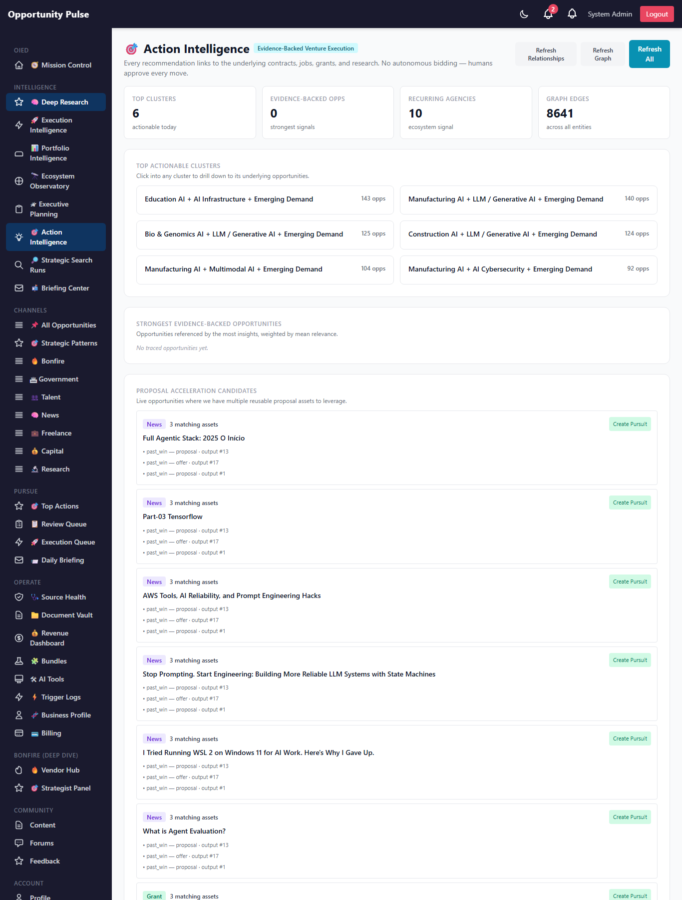
Header with the three Refresh buttons + the four-up KPI strip + the first section.
Screen: KPI strip
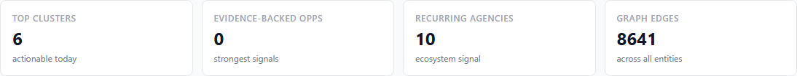
Active clusters · evidence-backed opps · recurring agencies · graph edges.
Screen: top actionable clusters
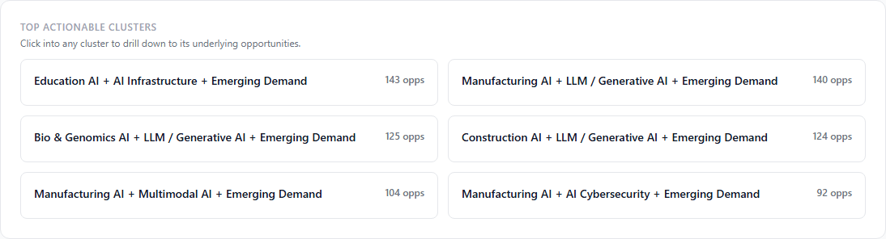
Click any cluster card to open the drilldown workspace.
Screen: proposal acceleration candidates
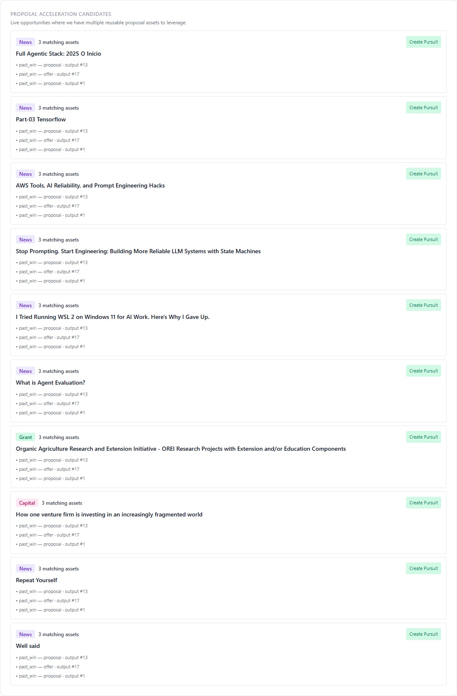
Live opportunities where multiple reusable assets match. "Create Pursuit" inline.
Screen: recurring agency ecosystems
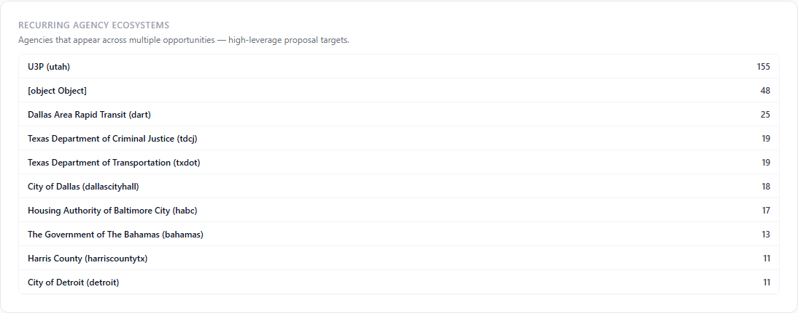
High-leverage proposal targets — one capability statement, many bids.
Screen: cluster drilldown workspace
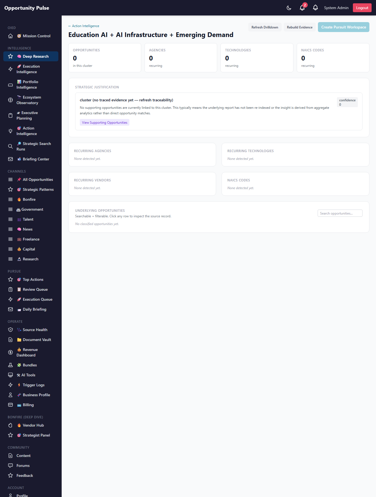
Per-cluster: justification, recurring themes/agencies/tech/NAICS, underlying opportunities.
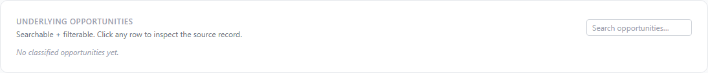
Underlying opportunities are searchable + filterable + sortable inline.
Screen: justification card
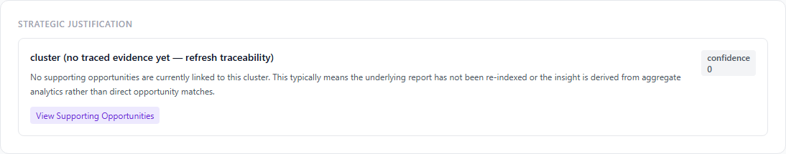
Composed deterministically. Confidence + headline + narrative + factor weights.
Screen: custom strategic search runs
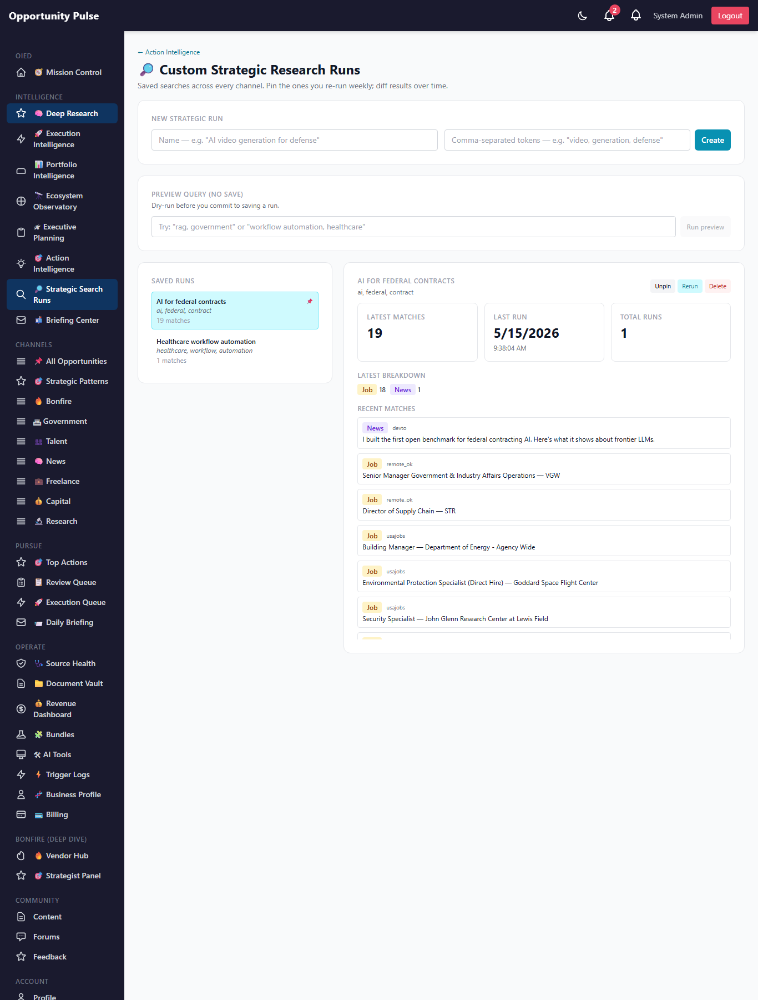
Save / pin / rerun / diff over time. Preview mode for dry-runs before saving.
Screen: proposal pursuit workspace
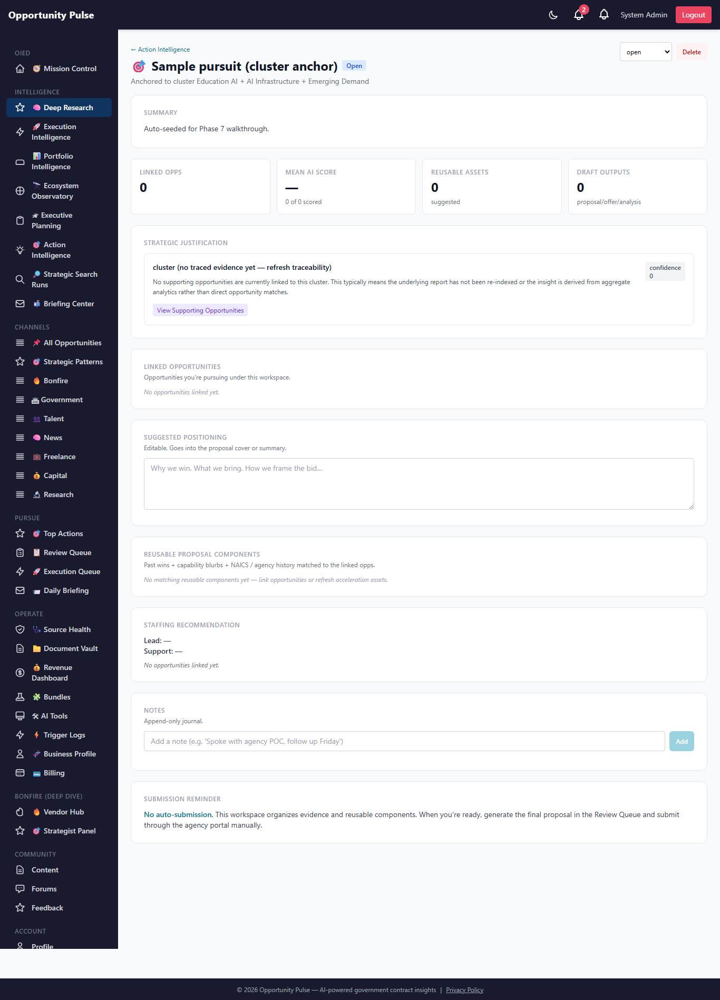
Anchor metadata + justification + linked opps + reusable assets + staffing + notes + submission reminder.
Full action intelligence dashboard
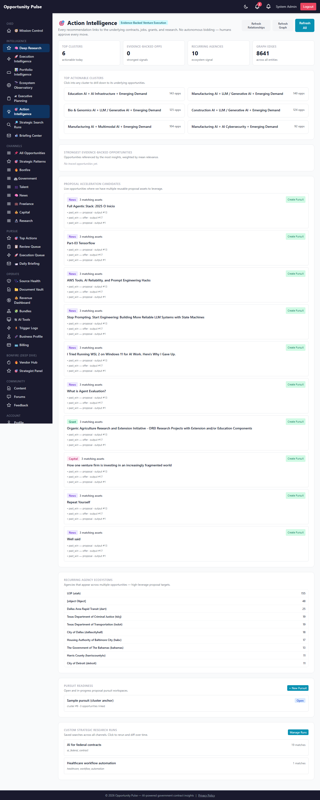
Database schema (Phase 7)
| Table | Purpose |
|---|---|
opportunity_traceability | Links (insight_kind, insight_id) → opportunity_id with relevance + contribution + reasoning. |
custom_research_runs | User-saved strategic searches + per-run history. |
pursuit_workspaces | Pursuit planning surfaces anchored to a venture / cluster / pattern / custom set. |
opportunity_relationships | Recurring agencies / tech / vendor / NAICS / keyword aggregate. |
justification_records | Composed rationale snapshots per insight. |
opportunity_graph_edges | Edges between entities (opp ↔ agency ↔ tech ↔ ...). |
proposal_acceleration_assets | Reusable proposal components from approved past wins + capability blurbs. |
cluster_drilldowns | Cached drilldown view per cluster (themes/agencies/tech/etc). |
API routes (Phase 7)
All admin-only, mounted under /api/v1/deep-research:
GET /action-intelligence— top-level dashboard payloadGET /evidence/:kind/:id+POST .../rebuildGET /opportunities/:id/insights— reverse lookupGET /justification/:kind/:id?rebuild=trueGET /clusters/:id/drilldown+POST .../refreshGET|POST /research-runs+POST /research-runs/preview+ per-id GET/PATCH/DELETE +POST .../rerunGET /graph/summary+GET /graph/neighborhood?kind=X&value=Y+POST /graph/refreshGET /relationships/recurring?type=agency&summary=true+POST /relationships/refreshGET /acceleration/assets+POST /acceleration/refresh+GET /acceleration/suggest/:idGET|POST /pursuits+ per-id GET/PATCH/DELETE
Files changed
Added — backend services (10)
backend/src/deepResearch/opportunityTraceability.service.jsbackend/src/deepResearch/opportunityRelationships.service.jsbackend/src/deepResearch/opportunityGraph.service.jsbackend/src/deepResearch/clusterDrilldown.service.jsbackend/src/deepResearch/opportunityJustification.service.jsbackend/src/deepResearch/customResearchRun.service.jsbackend/src/deepResearch/proposalAcceleration.service.jsbackend/src/deepResearch/pursuitWorkspace.service.jsbackend/src/deepResearch/actionIntelligence.service.js
Added — models + migration
backend/src/migrations/20260515000004-deep-research-phase-7.js(8 tables)- 8 new Sequelize models in
backend/src/models/
Added — frontend
frontend/src/pages/ActionIntelligencePage.jsxfrontend/src/pages/ClusterDrilldownPage.jsxfrontend/src/pages/PursuitWorkspacePage.jsxfrontend/src/pages/ResearchRunsPage.jsxfrontend/src/components/deepResearch/ActionVisuals.jsx(EvidenceDrawer + badges)
Added — tests + scripts
- 7 new test files in
backend/tests/deepResearch/ backend/scripts/capture-deep-research-phase-7-walkthrough.js
Modified
backend/src/models/index.js— register 8 new modelsbackend/src/deepResearch/deepResearch.controller.js— 24 new handlersbackend/src/deepResearch/deepResearch.routes.js— 24 new routesfrontend/src/App.jsx— 4 new routesfrontend/src/components/common/Sidebar.jsx— 2 new sidebar linksfrontend/src/services/deepResearchService.js— 24 new API client functions
Validations
- Unit + integration: 46 new tests across 7 files; full suite at 1,874 / 1,874 passing.
- Migration runs clean on prod (
migrated 0.409s). All 8 tables verified. - Recurring-relationship refresh on prod: 1,259 relationships across 5,000 active opportunities.
- Graph refresh on prod: 8,641 edges across 5 entity kinds.
- Acceleration assets refresh on prod: 3 past-win assets surfaced from approved OpportunityOutputs.
- Action intelligence read on prod: 6 active clusters, 10 acceleration candidates, 10 recurring agencies returned.
- Cluster drilldown: 5 cached drilldowns persisted via
refreshDrilldown. - Custom research runs: 2 sample runs created end-to-end (create + tokenize + query + persist).
- Pursuit workspace: 1 sample pursuit created anchored to a cluster, with justification persisted.
- 11 screenshots captured from the live prod pages.
Known limitations
- Traceability is built lazily. If a venture or cluster has never had its evidence inspected, the first request derives links on-the-fly and returns them but does not persist (unless rebuild is called). Worst case is +200ms latency on first hit.
- Justification confidence is a heuristic. It combines volume + mean relevance — useful as a relative ranking signal, not as a calibrated probability.
- Graph rendering is tabular, not visual. The data layer supports a force-directed graph view; the current UI uses tables + recurring-relationship rows. A canvas-rendered graph is a clean Phase 8 add.
- Acceleration assets depend on approved OpportunityOutputs. Until the Review Queue accumulates enough approved past wins, the assets table is small (3 on the current seeded prod corpus).
- Research-run tokenization is AND-only. No OR-of-tokens syntax yet. Users who want OR semantics can save two runs.
- Recurring detection is corpus-wide, not per-org. Single-tenant assumption holds; multi-tenant filtering is a future concern.
Recommended Phase 8
- Force-directed opportunity graph viewer. The data is in place; a small canvas component (≤200 lines) renders nodes + edges + a "drill into" interaction. Centerpiece of an executive-grade graph explorer.
- Pursuit-to-Review-Queue handoff. "Generate proposal draft" button on a pursuit pre-fills the existing actionGenerator with the linked opps + suggested assets + the pursuit's positioning text. Lands a draft in the Review Queue. Still human-submitted.
- Backfill traceability eagerly on insight write. When a new recommendation / intervention / venture is created, immediately rebuild its traceability row. Removes the "first-hit derivation" latency.
- Recurring outcomes loop. Phase 6 acknowledged recommendations + Phase 7 pursuit outcomes (won/lost) should feed a measure-only retrospective: which recurring agencies, technologies, and clusters actually produced wins?
- External-source ecosystem signal ingestion. Ecosystems today are derived from our portfolio + opportunity corpus. Pulling external signals (funding rounds, research-paper velocity, talent flows) would make ecosystem classifications independent of our own footprint.
-
Submission Readiness Engine. A parallel track (separate plan file
staged-spinning-parasol.mdalready drafted) — take a shortlisted opportunity from "selected" to "ready-to-upload bid package" with evergreen document vault, attachment locker, compliance matrix, and submission package assembler. Still no auto-submission — that hard constraint remains.